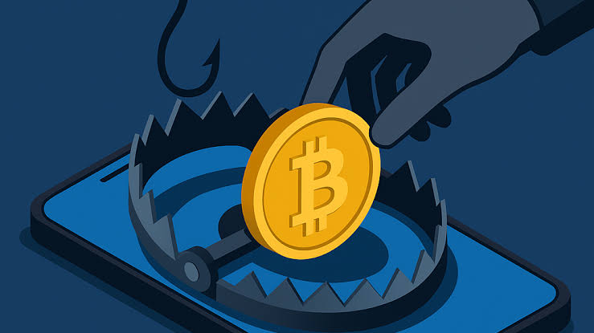
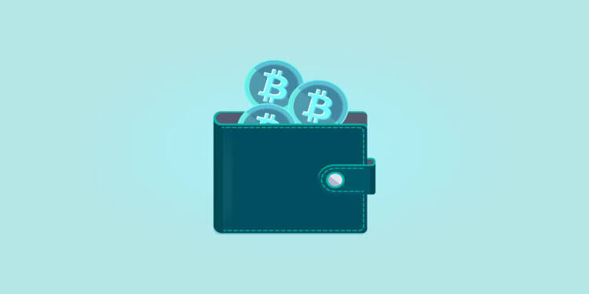
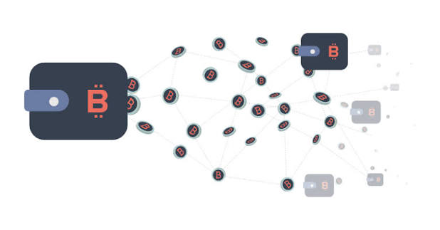

Seguridad y hacking
Phishing, fake wallets y dust attacks
En el mundo de las criptos no hay una entidad central (banco, compañia, etc) por lo que la seguridad depende por
completo de nosotros como usuarios
finales. Los atacantes suelen usar ingeniería social y descuidos técnicos mediante estas tres amenazas
principales: phishing, fake wallets y dust attacks
| Ataque | Objetivo | Como lo hace? | Como prevenir? |
|---|---|---|---|
| Phishing | Robar frases de semillas (seeds). | Clonar paginas webs, enlaces falsos, etc. | Siempre mirar las URLs o guardarlas en marcadores en el navegador. |
| Fake Wallets | Acceder totalmente a tu billetera. | Software malicioso distribuido en tiendas o webs que fueron clonadas. | Descargar únicamente desde los sitios oficiales. |
| Dust attacks | Desanonimización o redirección a webs maliciosas. | Envíos no solicitados de fracciones de monedas. | Ignorar activos no solicitados; jamás interactuar, vender ni abrir enlaces vinculados a tokens desconocidos. |



Rug pulls, honeypots y scams en DeFi
Rug pulls
En español se traduce como "tiron de alfombra". Ocurre cuando los desarrolladores de un proyecto atraen a
inversores pero, repentinamente,
retiran todos los fondos del contrato o del pool de intercambio. Basicamente, desaparecen con el dinero y dejan
tokens sin valor.
Hay 2 tipos de este:
- Hard Rug Pull: El creador programa una función oculta en el contrato inteligente
que le permite acuñar tokens
infinitos o drenar el pool de liquidez directamente.
- Soft Rug Pull: Los creadores prometen desarrollos futuros mientras van vendiendo
gradualmente sus propias reservas
masivas de tokens en el mercado hasta desplomar el precio a cero.
honeypots
En español significa "tarro de miel". Un honeypots es un smart contract programado de forma maliciosa para que
los usuarios puedan comprar el token,
pero nunca venderlo.
Como opera?
El gráfico del token verás solo una curva creciendo constantemente y sin interrupciones (que significa compras
continuas). Eso atrae a más compradores
desprevenidos creyendo que han encontrado un activo de alto rendimiento.
Scams en Defi
Aquí tenemos estafas como DApps falsas que parecen sitios legitimos pero vacia tus fondos si le otorgas
permisos.
Otro conocido es el Airdrop Scam (Tokens trampa) en donde recibes tokens desconocidos en tu billetera de forma
gratuita. Al intentar intercambiarlos
en un enlace que figura en el nombre del token, interactúas con un contrato malicioso que drena tu saldo.